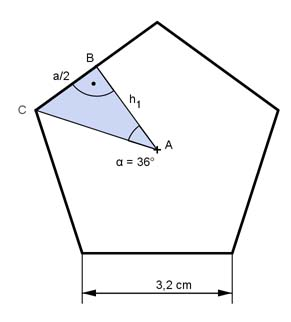

Aufgabe 54 Berechnen Sie das Volumen V eines Prismas mit einer Höhe h von 5 cm und einem regelmäßigen Fünfeck mit einer Seitenlänge a von 3,2 cm als Grundfläche.  Das regelmäßige Fünfeck besteht aus 5 gleich großen gleichschenkligen Dreiecken mit der Fläche G: V = 5 * G * h 360° Der Mittelpunktswinkel bei A beträgt ------- = 72° --> α = 36° 5 a * h1 G = -------- 2 Im rechtwinkligen Dreieck ABC gilt: a/2 tan α = ----- |*h1 h1 h1 * tan α = a/2 | : tan α a 3,2 cm 3,2 cm h1 = ----------- = -------------- = ------------ = 2,2 cm 2 * tan α 2 * tan 36° 2 * 0,7265 3,2 cm * 2,2 cm G = ------------------- = 3,52 cm² 2 V = 5 * 3,52 cm² * 5 cm = 88 cm³